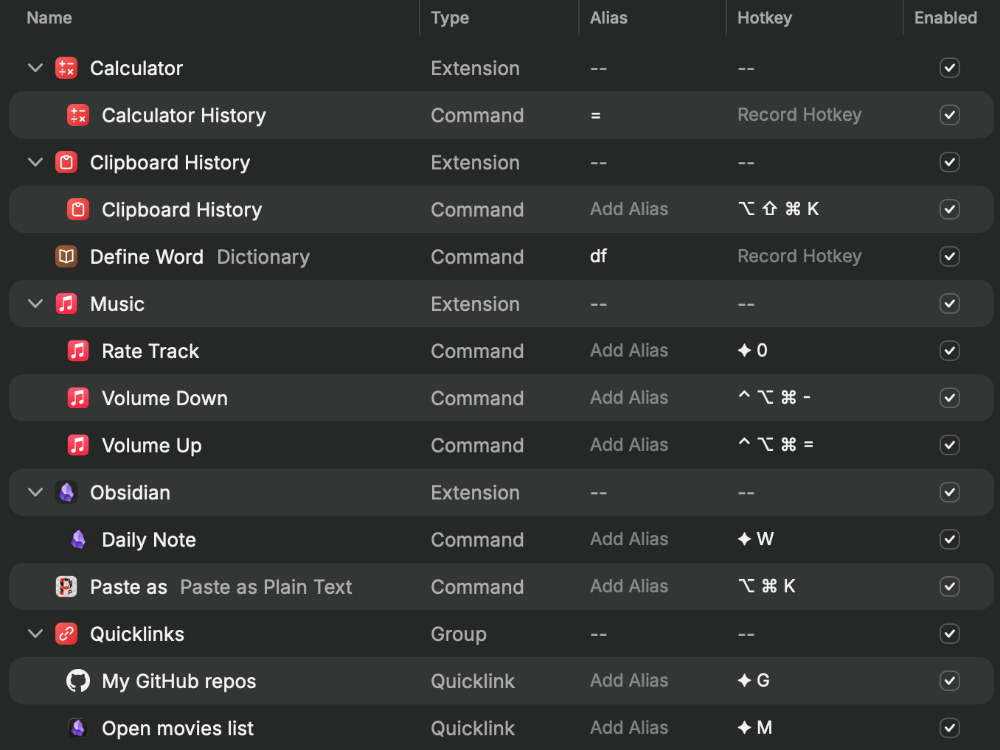
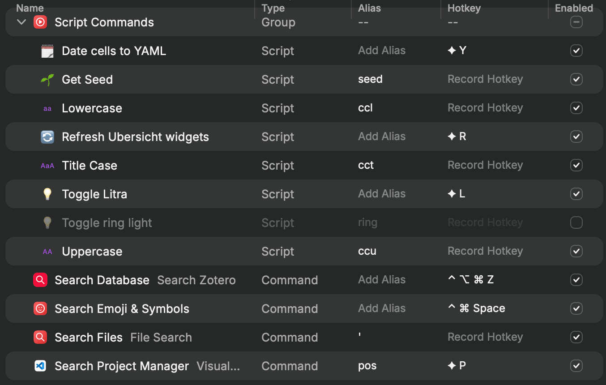
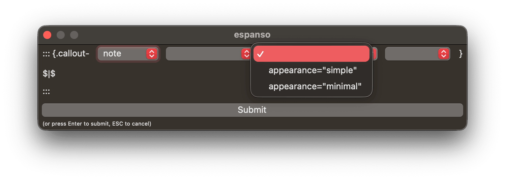
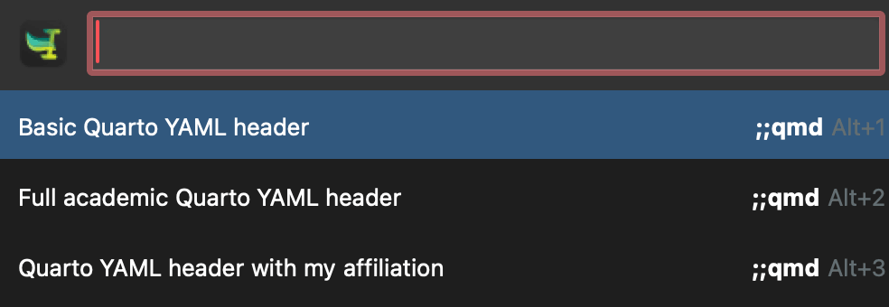

![]()
library(tidyverse)
# Use nicer DuckDB Connections Pane features
# options("duckdb.enable_rstudio_connection_pane" = TRUE)
# Connect to a database
db_file <- "my_fancy_database.duckdb"
con <- connections::connection_open(duckdb::duckdb(), db_file)
# Add stuff to it
copy_to(
con,
gapminder::gapminder,
name = "gapminder",
overwrite = TRUE,
temporary = FALSE
)
# Get stuff out of it
gapminder_2007 <- tbl(con, I("gapminder")) |>
filter(year == 2007) |>
collect()
# All done
connections::connection_close(con)On January 13, 2026, I was on Posit’s Data Science Lab to talk about my Positron settings and other neat workflow-y things I use to make my life easier.
This isn’t a standard blog post—it’s mostly just a list of the stuff we talked about, with lots of different links to other resources.
Positron stuff
Favorite Positron extensions:
My custom Positron settings (these all live in settings.json):
Click to expand
{
// Editor settings
// -------------------------------------------------------------------------
// Fonts
// Use GitHub's Monaspace (https://github.com/githubnext/monaspace) and enable ligatures
"editor.fontFamily": "'Monaspace Argon Var'",
"editor.fontSize": 12.5,
"editor.fontLigatures": "'ss01', 'ss02', 'ss03', 'ss04', 'ss05', 'ss06', 'ss07', 'ss08', 'calt', 'dlig', 'liga'",
// Highlight modified/unsaved tabs
"workbench.editor.highlightModifiedTabs": true,
// Add some rulers
"editor.rulers": [
80,
100
],
// Indent with two spaces, but only for R
"[r]": {
"editor.tabSize": 2,
"editor.formatOnPaste": false,
},
"[quarto]": {
"editor.tabSize": 2,
"editor.defaultFormatter": "quarto.quarto"
},
// Nicer handling of end-of-document newlines, via
// https://rfdonnelly.github.io/posts/sane-vscode-whitespace-settings/
"files.insertFinalNewline": true,
"editor.renderFinalNewline": "dimmed",
"editor.renderWhitespace": "trailing",
"files.trimFinalNewlines": true,
// General editor settings
"editor.detectIndentation": false,
"editor.showFoldingControls": "always",
"window.newWindowDimensions": "inherit",
"editor.scrollBeyondLastLine": false,
"window.title": "${activeEditorFull}${separator}${rootName}",
"editor.tabSize": 4,
"editor.wordWrap": "on",
"editor.multiCursorModifier": "ctrlCmd",
"editor.snippetSuggestions": "top",
// Hide things from the file panel
"files.exclude": {
"**/.Rhistory": true,
"**/.Rproj": true,
"**/.Rproj.user": true,
"**/renv/library": true,
"**/renv/local": true,
"**/renv/staging": true
// "**/_freeze": true,
// "**/.quarto/**": true
},
// Hide things from the global search menu and watcher
"files.watcherExclude": {
"**/.Rproj/*": true,
"**/.venv/*": true,
"**/renv/library": true,
"**/renv/local": true,
"**/renv/staging": true,
"*/_freeze/*": true,
"*/.quarto": true
},
// Sign git commits
"git.enableCommitSigning": true,
// Extension-specific settings
// -------------------------------------------------------------------------
// Markdown linting settings (idk if this stuff even works with Quarto though)
"markdownlint.config": {
"default": true,
"MD012": { "maximum": 2 },
"MD025": false,
"MD041": false
},
// Wrap at 80 columns with the "Rewrap" extension
"rewrap.wrappingColumn": 80,
// Don't phone home for the "YAML" extension
"redhat.telemetry.enabled": false,
// Positron things
"git.confirmSync": false,
"git.suggestSmartCommit": false,
"positron.r.quietMode": true,
"better-comments.highlightPlainText": true,
"workbench.startupEditor": "newUntitledFile",
"workbench.editor.empty.hint": "hidden",
"remote.autoForwardPortsSource": "hybrid",
"projectManager.tags": [
"Personal",
"Research",
"Teaching"
],
"window.confirmBeforeClose": "keyboardOnly",
"plots.darkFilter": "off",
"workbench.keybindings.rstudioKeybindings": true,
"positron.assistant.enable": true,
"dataExplorer.summaryCollapsed": true,
"editor.defaultFormatter": "Posit.air-vscode",
"python.locator": "js",
"python.enableAutoReload": false,
"workbench.editor.pinnedTabsOnSeparateRow": true,
"positron.assistant.inlineCompletions.enable": {
"*": false
},
"inlineChat.lineNaturalLanguageHint": false,
// Miscellaneous settings
"latex-workshop.view.pdf.color.dark.backgroundColor": "#272822",
"latex-workshop.latex.autoBuild.run": "never",
"files.associations": {
"renv.lock": "json"
},
"editor.guides.bracketPairs": "active",
"diffEditor.ignoreTrimWhitespace": false,
"terminal.integrated.commandsToSkipShell": [
"language-julia.interrupt"
],
"githubPullRequests.createOnPublishBranch": "never",
"projectManager.openInNewWindowWhenClickingInStatusBar": true,
"[dockercompose]": {
"editor.insertSpaces": true,
"editor.tabSize": 2,
"editor.autoIndent": "advanced",
"editor.quickSuggestions": {
"other": true,
"comments": false,
"strings": true
},
"editor.defaultFormatter": "redhat.vscode-yaml"
},
"[github-actions-workflow]": {
"editor.defaultFormatter": "redhat.vscode-yaml"
},
"[yaml]": {
"editor.defaultColorDecorators": "auto"
},
"markdownTablePrettify.extendedLanguages": [
"quarto"
],
"editor.copyWithSyntaxHighlighting": false,
"workbench.settings.showAISearchToggle": false,
"workbench.preferredDarkColorTheme": "Monokai",
"workbench.colorTheme": "Monokai",
// "workbench.colorTheme": "Monokai Pro (Filter Spectrum)",
// Override the terminal background color to match the editor background
"workbench.colorCustomizations": {
"[Monokai Pro (Filter Spectrum)]": {
"terminal.background": "#222222",
"panel.background": "#222222"
},
"[Monokai Classic]": {
"terminal.background": "#272822",
"panel.background": "#272822"
}
},
"workbench.iconTheme": "material-icon-theme",
"workbench.productIconTheme": "fluent-icons",
"pastum.defaultConvention": "snake_case",
"git.autofetch": true,
"window.newWindowProfile": "Default",
"terminal.integrated.detectLocale": "on",
"claudeCode.preferredLocation": "panel",
"material-icon-theme.folders.associations": {
"renv": "Packages",
"_freeze": "Archive",
"_targets": "Components",
"resource": ""
},
"spellright.language": [
"en"
],
"spellright.documentTypes": [
"markdown",
"latex",
"quarto"
],
"workbench.activityBar.location": "top"
}My Positron keyboard shortcuts (these all live in keybindings.json):
Click to expand
[
{
"key": "shift+cmd+d",
"command": "editor.action.copyLinesDownAction",
"when": "editorFocus"
},
{
"key": "ctrl+alt+`",
"command": "workbench.action.terminal.new",
"when": "terminalProcessSupported || terminalWebExtensionContributedProfile"
},
{
"key": "ctrl+shift+`",
"command": "-workbench.action.terminal.new",
"when": "terminalProcessSupported || terminalWebExtensionContributedProfile"
},
{
"key": "ctrl+shift+`",
"command": "workbench.action.terminal.toggleTerminal",
"when": "terminal.active"
},
{
"key": "ctrl+`",
"command": "-workbench.action.terminal.toggleTerminal",
"when": "terminal.active"
},
{
"key": "shift+cmd+c",
"command": "-editor.action.commentLine",
"when": "config.rstudio.keymap.enable && editorTextFocus"
},
{
"key": "alt+cmd+q",
"command": "rewrap.rewrapComment",
"when": "editorTextFocus"
},
{
"key": "alt+q",
"command": "-rewrap.rewrapComment",
"when": "editorTextFocus"
},
{
"key": "cmd+d",
"command": "-editor.action.deleteLines",
"when": "editorTextFocus"
},
{
"key": "cmd+. cmd+r",
"command": "r.createNewFile"
},
// create reprex from selection
{
"key": "cmd+. cmd+shift+r",
"command": "workbench.action.executeCode.console",
"when": "editorTextFocus",
"args": {
"langId": "r",
"code": "reprex::reprex_selection()",
"focus": false
}
},
{
"key": "shift+alt+cmd+l",
"command": "editor.action.insertCursorAtEndOfEachLineSelected",
"when": "editorTextFocus"
},
{
"key": "shift+alt+i",
"command": "-editor.action.insertCursorAtEndOfEachLineSelected",
"when": "editorTextFocus"
},
// Keybindings inspired by Emil Hvitfeldt
// https://emilhvitfeldt.com/post/positron-key-bindings/
{
"key": "cmd+. cmd+1",
"command": "workbench.action.focusActiveEditorGroup"
},
{
"key": "cmd+. cmd+2",
"command": "workbench.action.positronConsole.focusConsole"
},
{
"key": "cmd+. cmd+shift+v",
"command": "workbench.action.positronConsole.clearConsole"
},
{
"key": "cmd+. cmd+3",
"command": "workbench.action.terminal.focus"
},
// {
// "key": "cmd+. cmd+shift+b",
// "command": "workbench.action.terminal.clear"
// },
{ // Restart terminal
"key": "cmd+shift+9",
"command": "runCommands",
"args": {
"commands": [
"workbench.action.terminal.kill",
"workbench.action.terminal.new"
]
}
},
// My stuff again ↓
{
"key": "cmd+. cmd+q",
"command": "quarto.newDocument"
},
{
"key": "shift+cmd+n",
"command": "-r.createNewFile"
},
{
"key": "cmd+. cmd+m",
"command": "workbench.action.files.newUntitledFile",
"args": { "languageId": "markdown" }
},
{
"key": "ctrl+shift+k",
"command": "editor.action.deleteLines",
"when": "editorTextFocus"
},
{
"key": "shift+alt+cmd+ctrl+t",
"command": "workbench.action.tasks.runTask",
"args": "Open in Typora"
},
{
"key": "cmd+alt+shift+i",
"command": "editor.action.insertSnippet",
"when": "editorTextFocus && editorLangId == quarto",
"args": {
"snippet": "```\n\n\n\n$0```{r}"
}
},
]Positron connections pane
Real life use cases:
- Mirror of a relational database of Idaho’s election results for testing and local development. It’s a core part of the DIY Election Desk project that I presented about at posit::conf(2025) (see code here)
- Taking a massive 10 GB zipped CSV file and putting it in a DuckDB database and accessing it through {dbplyr} (see code here)
Example with DuckDB and {connections}; the same general process works with any other database backend, like SQLite, MySQL, Spark, PostgreSQL, etc.:
Workflow tips and tricks
General things I use
macOS Quick Actions
Open a folder in Positron from macOS Finder with Quick Actions
Raycast
Download Raycast (both macOS and Windows)
Helpful resources:
- Raycast on YouTube: Raycast has a big YouTube presence and there are a lot of resources out there about it
- 101 Things You Can Do With Raycast
- Getting Started with Raycast for Windows
My setup:
My custom Raycast scripts (neat things like getting a random.org seed, toggling a webcam light)
My extension settings (there’s no easy way to share these details other than screenshots 🤷♂️). The ◆ symbol here stands for ⌘⌥^⇧ (or mashing the whole corner of my keyboard).


Custom quicklinks:
- Search my repositories on Github
https://github.com/search?q=user%3Aandrewheiss%20{argument name="Search"}&type=code
- Open my “Movies to watch” note in Obsidian
obsidian://open?path=%2FUsers%2Fandrew%2FObsidian%2FNotes%2F%E2%80%A2%20Goals%2FMovies%20to%20watch.md
- Search my repositories on Github
Other neat features:
- Upcoming calendar events in the menubar
- Clipboard history
- Emoji picker
- Color picker
Espanso
Download Espanso (macOS, Windows, and Linux)
Some things I do with it:
Typographic things like:
;commfor ⌘,;shiftfor ⇧,;optfor ⌥;timesfor a true multiplication sign ×,;minusfor a true subtraction sign −;prime1and;prime2for ′ and ″ (like 5′ 11″)
…and date things like:
;dtfor “2026-01-13”;dzfor “2026-01-13T11:06”;dmfor “2026-01-13 11:06:05”;datefor “January 13, 2026”
…and longer words with repeated letters that I always mess up, like these:
insttnfor “institution”consttalfor “constitutional”entrepalfor “entrepreneurial”
…and code snippets like
;dplyrsumfor inserting this R code to disable {dplyr}’s grouping messages:options(dplyr.summarise.inform = FALSE)…or running a {targets} pipeline with
;tarm:targets::tar_make()…or adding Quarto chunk metadata like disabling warnings and messages with
;wm:#| warning: false #| message: false…and adding figure dimensions with
;figwor;figh:#| fig-width: #| fig-height:…and lots of other Quarto things like panel tabsets (
;;pan), slideshow columns (;;col), includes (;;include), conditional content (;;visible), callouts (;;call), etc.:
…and creating boilerplate Quarto YAML front matter with
;;qmd:
Citation
BibTeX citation:
@online{2026,
author = {, Mèng},
title = {How to Make Your Data Analysis Life Easier Using {Positron,}
{Raycast,} and {Espanso}},
date = {2026-01-13},
url = {https://philogic.cn/blog/2026/01/13/dsl-positron-workflow/},
doi = {10.59350/zj8p7-7kg49},
langid = {en}
}
For attribution, please cite this work as:
Mèng. 2026. “How to Make Your Data Analysis Life Easier Using
Positron, Raycast, and Espanso.” January 13, 2026. https://doi.org/10.59350/zj8p7-7kg49.